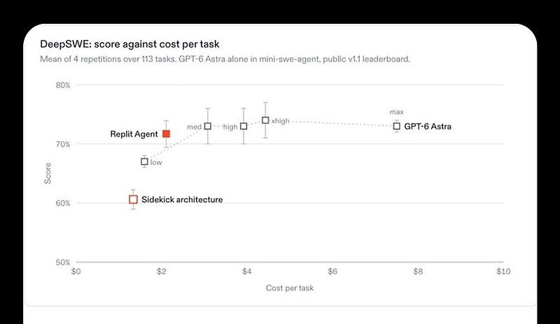
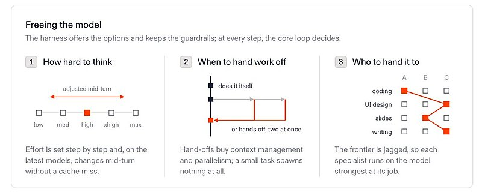
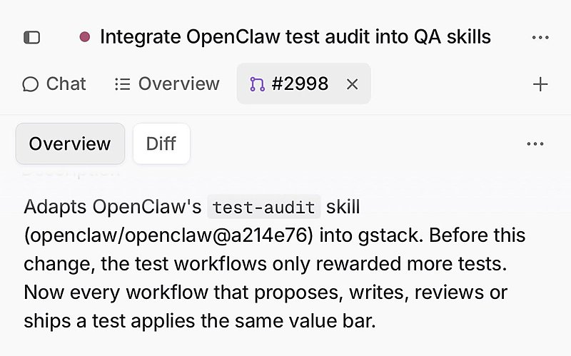
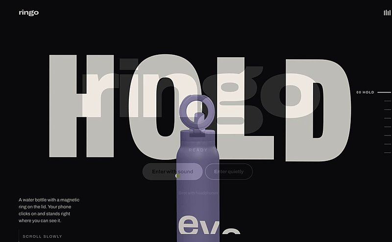

AI 日报 · 10月1日
Gemini 4 Argon 亮相，百万输出上限仍待开放
Google 公布 Gemini 4 Argon 的长任务、编码与防御安全定位，目前只向可信测试方逐步开放；Builder 的 Agent 实践与今日 GitHub 项目补充落地视角。
Gemini 4 Argon
长任务
Agent 工程
GitHub Trending
6
Builder 动态
5
今日上榜项目
3
官方与 RSS
1
公开视频
今日要点
深度对话
DevDay 后，构建者先看哪些变化？
9 月 30 日公开视频中，Sam Witteveen 从开发者角度梳理 DevDay 发布。下列功能与开放范围以 OpenAI 官方回顾为准；视频是独立解读。
长期任务与授权
Dots 和 Agents API 将持续任务、工具调用与电脑操作带进同一工作流；评估时应先划定可执行动作与人工确认点。
模型成本与速度
GPT‑6.1 Sol 和 Ultrafast 分别改变成本与等待时间的取舍；不同速率层级和开放计划需按官方页面核对。
先做任务级验证
视频面向构建者整理发布内容。比较新功能时，可用同一真实任务记录成功率、耗时和总费用。
观看完整解读
公开视频来自 Sam Witteveen 频道；涉及具体产品可用性时，请再查厂商原文。
RSS 精选
官方发布与订阅更新
建造者动态
Builder 观点与实践
Thibault Sottiaux｜Dot 先学习偏好再扩展团队
Sottiaux 表示几天内会有数百万个 Dot 上线。他的个人体验是用两三天教会偏好后更有用；多 Dot 团队功能仍在准备中。这是产品负责人预期，不等于已覆盖所有用户。
Amjad Masad｜用 Harness 改善任务成本
Masad 展示 Replit Agent 的设计：执行框架提供选择和边界，模型逐步决定思考强度、何时转交及交给谁。配图给出其任务集上的成本与得分对比，属于团队自测。


Guillermo Rauch｜AI SDK 周下载量达三千万
Rauch 称 AI SDK 已达到每周 3000 万次下载，并展示用代码生成里程碑视频；该数字来自作者披露，下载量不等同活跃开发者数。
Garry Tan｜给测试套件做审计
Tan 表示已将 OpenClaw 的 test-audit skill 变体合入 GStack，目的是识别测试膨胀。帖子只说明合并与动机，未给出效果评测。

Zara Zhang｜六次提示词完成产品网站
Zhang 展示水杯营销网站，称用 Opus 5.5 的六次提示词制作，并借助 ElevenLabs、Meshy 和 OpenAI API 生成素材。此为单个作品演示。

Aaron Levie｜呼吁共享安全实践
Levie 认为现阶段 AI 公司仍有机会围绕安全与保障形成共同标准；这是他的行业判断，并非已有统一标准落地的公告。
GitHub Trending
今日上榜的开源项目


项目来自 10 月 1 日北京时间 GitHub Trending 当日列表，选取昨日未重点介绍的项目；星标和 Fork 为本次 GitHub API 快照，数字会变化。
今日思考
先测长任务，再谈百万输出
Argon 的百万 token 是单次输出上限，不是已证实每项任务都需要如此长的结果。当前访问仍局限在可信测试群体；等可用时，先选一项可复现的长任务，记录完成率、审查成本和人类纠错次数，再与现有流程比较。阅读 Google 官方说明 →
今日一问：你的工作里，哪项任务真正受输出长度限制，而不是受验证成本限制？
今日一问：你的工作里，哪项任务真正受输出长度限制，而不是受验证成本限制？
参考来源
Google｜Gemini 4 Argon 官方说明
Google DeepMind｜Gemini 模型与评测
OpenAI｜DevDay 2026 官方回顾
Sam Witteveen｜DevDay 开发者解读视频
AI前线｜Gemini 4 Argon 报道
Thibault Sottiaux｜Dot 使用与计划
Amjad Masad｜Agent 执行框架
Guillermo Rauch｜AI SDK 下载量
Garry Tan｜测试审计
Zara Zhang｜网站演示
Aaron Levie｜共享安全实践
GitHub｜10 月 1 日 Trending
debpalash/VoiceStudio
mvschwarz/openrig
mksglu/context-mode
heygen-com/hyperframes
colbymchenry/codegraph